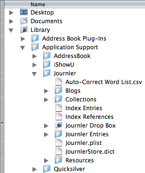

Data Storage
Data Storage
Where Is My Data?
 Journler stores the entire contents of your journal, including entries as well as the files it manages, in one of two places:- Home > Library > Application Support
- Home > Documents
Can I Move My Journal? What about Syncing and Multiple Computers?
Yes, you may move your journal to a different location. Some people prefer to keep it in Documents along with the rest of their important files. Quit Journler and move the entire Journler folder to your documents folder. Next time you launch Journler you will be asked you to locate the journal. Select the Journler folder you just moved. Make sure to select the actual folder and not any of its contents.Syncing is a bit more difficult and not officially supported at this time. Users have proposed alternatives. Because you may move your journal, one solution keeps the data on a dedicated USB stick. Whenever you move to another computer take the stick with you. Another option uses the offline iDisk option combined with syncing. Place your journal on the iDisk but take it offline. Whenever you switch computers, put the iDisk back online and sync its contents. For more information about syncing and using your journal on more than one computer, please refer to the Journler Wiki.
Data Storage Proper
The Journler data management system distinguishes between two disk based entities: the single journal database and individually existing object files. A further distinction with regard to individual entry files may be made between content and metadata.The metadata for your entire journal is stored in a single database based on Apple's archiver technology. Attributes such as title, category and date as well as the relationships between the entities in your journal, for example what entries belong to what folders, are all stored in this single file. When Journler starts up it loads only this file, an inexpensive and fast operation. When you quit, Journler saves out all of you journal's metadata to this same file. No matter how big your journal becomes the database will remain relatively small and so fast to work with.
Simultaneously, Journler maintains individual metadata files for all of the objects in your journal. Every entry, folder, resource and blog has a corresponding file on your computer. The files only include metadata and are also for this reason quite small. During normal use these individual files are saved anytime the selection changes or an autosave operation is performed. If Journler crashes or does not shut down properly it avoids the database at the next launch and instead loads from these files. The dual system minimizes the possibility of data loss while ensuring fast disk access.
The Rich Text Standard
Journler stores the actual, textual content of your entries in their own files, away from the metadata. Journler uses the well established RTFd standard, guaranteeing that you always have access to the content of your entries no matter what happens to their metadata.You will find the rich text files for an entry inside the Journler folder discussed above. Descend into the Journler Entries folder and again into one of the entry folders, where you will see a file named _Text.jrtfd. Right-click on the file and choose Show Package Contents from the menu. Inside is the Entry.rtfd document which corresponds to the actual content of the entry.
It is strongly recommended that you do not alter the content of your entries outside Journler. Your changes will not be recorded by the program and so not reflected when searching or using smart folders. Entry content is kept in .jrtfd packages in order to hide it from Spotlight.